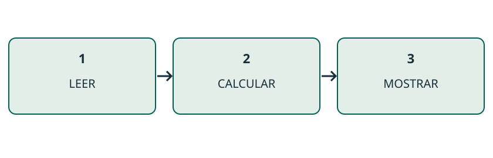
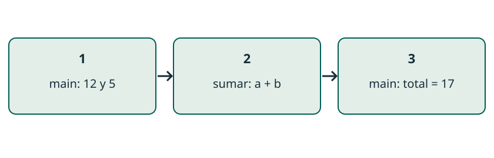
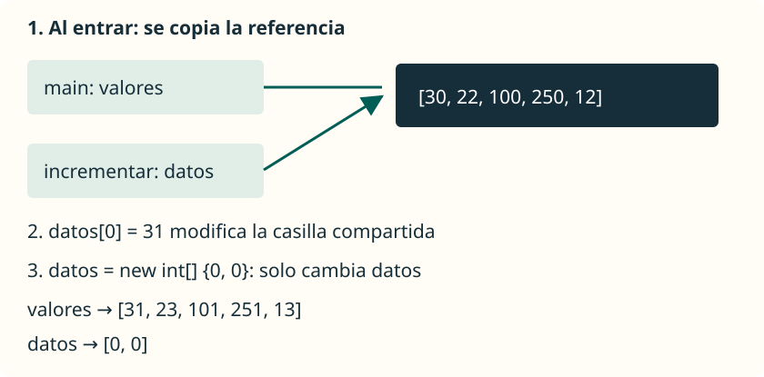

Funciones en Java
JAVA / EJEMPLO DESARROLLADO
Del programa largo a tres tareas
Leer, calcular y mostrar tienen responsabilidades distintas.
Partimos de dos números ya leídos. Si mezclamos la suma con la salida por consola, no podemos reutilizar el cálculo sin imprimir. Separaremos las tareas para poder llamar al cálculo desde main y, después, desde un test.
Revelar el razonamiento
La parte reutilizable recibe dos int y devuelve un int. No necesita Scanner ni println.
int primero = 8;
int segundo = 5;
System.out.println(primero + segundo);
JAVA / MÉTODOS
Dividir el trabajo
Un método da nombre a una tarea que podemos reutilizar.
Decidimos qué datos recibe, qué operación realiza y qué resultado devuelve. Así main puede coordinar tareas pequeñas.
int total = sumar(10, 5);
System.out.println(total); // 15JAVA / EJEMPLO DESARROLLADO
Diseñar el contrato antes del cuerpo
Sumar recibe dos enteros y entrega su suma.
El contrato describe qué puede esperar quien llama al método. Los parámetros son las entradas; el retorno es la salida. Para este ejemplo usamos valores pequeños cuyo resultado cabe en int.
Revelar el razonamiento
EN PALABRAS SENCILLAS: le entregamos dos números a una pequeña calculadora y recogemos uno. La pantalla la controla main.
static int sumar(int a, int b) {
return a + b;
}
// main:
int total = sumar(8, 5);
System.out.println(total); // 13JAVA / MÉTODOS
Leer una declaración
La cabecera explica cómo utilizar el método.
static permite llamarlo sin crear un objeto. int indica el resultado; los dos parámetros aportan las entradas. El cuerpo realiza el cálculo.
public static int sumar(int a, int b) {
return a + b;
}JAVA / EJEMPLO DESARROLLADO
Qué significa cada pieza
La declaración pertenece a la clase, fuera de main.
public permite el acceso desde otras clases; static permite llamar sin construir un objeto. int es el tipo devuelto. sumar es el nombre y (int a, int b) declara las dos entradas. Las llaves delimitan el cuerpo.
public class Calculadora {
public static int sumar(int a, int b) {
return a + b;
}
}JAVA / MÉTODOS
Parámetros y argumentos
Los parámetros se declaran; los argumentos se proporcionan al llamar.
Se evalúa 3 + 2 y se copia 5 en b. Los nombres no tienen que coincidir: importa la posición y la compatibilidad de tipos.
int puntos = 12;
int total = sumar(puntos, 3 + 2);
// a = 12; b = 5; total = 17JAVA / EJEMPLO DESARROLLADO
Seguir los datos de una llamada
Cada argumento se evalúa y se asigna a su parámetro por posición.
En sumar(puntos, 3 + 2), primero obtenemos 12 y 5. La nueva llamada tiene a = 12 y b = 5. El return calcula 17; solo entonces se completa la asignación a total.
Revelar el razonamiento
1. Argumentos: 12 y 5. → 2. Parámetros: a = 12, b = 5. → 3. Cálculo: 17. → 4. main guarda total = 17.
int puntos = 12;
int total = sumar(puntos, 3 + 2);
JAVA / MÉTODOS
Devolver no es mostrar
return entrega un valor al lugar de la llamada.
El método calcula 7, pero no escribe en consola. Para mostrarlo debemos utilizar println; también podemos guardar el resultado o multiplicarlo.
Ver la explicación
La llamada devuelve 7, pero su resultado se descarta. El método no contiene println.
public static int sumar(int a, int b) {
return a + b;
}
// En main:
sumar(4, 3);JAVA / EJEMPLO DESARROLLADO
Usar el resultado en otra operación
El valor devuelto sustituye a la llamada dentro de la expresión.
sumar(4, 3) produce 7. En la primera línea, ese 7 se multiplica por 2. El método no decide si guardamos, imprimimos o combinamos el resultado: lo decide quien lo llama.
int doble = sumar(4, 3) * 2;
System.out.println(doble); // 14
System.out.println(sumar(1, 2)); // 3JAVA / MÉTODOS
Una acción sin retorno
void indica que no se devuelve ningún valor.
Este método recibe un nombre y muestra un saludo. Se llama como una instrucción; no podemos asignar su resultado a una variable.
public static void saludar(String nombre) {
System.out.println("Hola, " + nombre);
}
// En main:
saludar("Ana");JAVA / EJEMPLO DESARROLLADO
Detectar un retorno que falta
Un método int debe devolver un int en todos los caminos que terminan normalmente.
Con numero = 0, el if no entra y este método llega al final sin entregar ningún valor. El compilador detecta el problema antes de ejecutar el programa.
Revelar el razonamiento
Para entradas pequeñas: añade return numero; después del if. Con números no negativos, ese es el valor absoluto.
static int absoluto(int numero) {
if (numero < 0) {
return -numero;
}
// Error deliberado: falta un return.
}JAVA / MÉTODOS
Entrar y volver
main espera el resultado antes de completar la asignación.
Primero se entra en sumar con a = 2 y b = 3. return entrega 5. Después main guarda ese valor en total y lo muestra.
// main → sumar → main
int total = sumar(2, 3);
System.out.println(total); // 5JAVA / EJEMPLO DESARROLLADO
Un programa completo que podemos ejecutar
main coordina; sumar realiza el cálculo.
Guarda este código como ProgramaSuma.java. La ejecución empieza en main, salta a sumar y vuelve a la asignación. La declaración de sumar no se ejecuta por estar escrita antes o después: hace falta una llamada.
public class ProgramaSuma {
public static void main(String[] args) {
int total = sumar(8, 5);
System.out.println(total); // 13
}
static int sumar(int a, int b) {
return a + b;
}
}JAVA / MÉTODOS
Cada llamada tiene sus variables
Una variable local pertenece a su bloque; un parámetro, a su llamada.
numero sigue siendo 10. valor recibe una copia y resultado solo existe dentro de duplicar. Para comunicar el cálculo usamos return.
public static int duplicar(int valor) {
int resultado = valor * 2;
return resultado;
}
// En main:
int numero = 10;
int doble = duplicar(numero); // 20JAVA / EJEMPLO DESARROLLADO
El ámbito sigue a las llaves
Una variable declarada dentro de un bloque no puede usarse fuera.
El if crea un bloque interior. total solo existe allí, aunque la condición sea true. Para usarlo después, decláralo antes del if y asegúrate de asignarle un valor en todos los caminos.
Revelar el razonamiento
Error de compilación: total no está en el ámbito de println. No se arregla haciendo public una variable local.
if (true) {
int total = 5;
}
System.out.println(total);JAVA / MÉTODOS
Copiar un valor primitivo
Cambiar el parámetro no reasigna la variable del llamador.
calcular trabaja con su propia variable valor. Al sumarle 50 cambia la copia, mientras numero conserva 10.
Ver la explicación
Se muestra 10: el argumento se ha pasado por valor.
public static void calcular(int valor) {
valor += 50;
}
// En main:
int numero = 10;
calcular(numero);
System.out.println(numero);JAVA / EJEMPLO DESARROLLADO
Recoger el cambio con return
Si necesitamos cambiar numero, debemos asignar el resultado.
Sumar 50 a un parámetro local no modifica numero. Esta versión devuelve el nuevo valor y main lo recoge. La asignación de la última línea es la que cambia la variable del llamador.
static int aumentar(int valor) {
return valor + 50;
}
// main:
int numero = 10;
numero = aumentar(numero); // 60JAVA / MÉTODOS
Arrays: compartir el objeto
También se copia la referencia a un array.
Dos variables distintas permiten acceder al mismo array. Modificar una casilla cambia ese objeto compartido; reasignar el parámetro solo cambia la copia de la referencia.
datos[0] = 31;
datos = new int[] { 0, 0 };
JAVA / MÉTODOS
Observar las referencias
Sigue por separado la variable y el array al que permite acceder.
Avanza por un ejemplo fijo. Primero se modifica el array inicial; después el parámetro apunta a otro array. Volver a main permite observar qué ha cambiado.
Activa JavaScript para recorrer la traza; el código permite estudiar el ejemplo completo.
int[] datos = { 3, 7 };
cambiar(datos);
// cambiar(int[] valores):
valores[0] = 10;
valores = new int[] { 20, 30 };
valores[1] = 40;main: datos → [3, 7]; al volver → [10, 7].
Simulación de un ejemplo fijo; no ejecuta Java.
JAVA / EJEMPLO DESARROLLADO
Devolver un array nuevo
Crear una copia permite conservar los datos de entrada.
Reservamos un array de la misma longitud y escribimos en él. Para {2, 5} devolvemos {3, 6}; el original sigue con {2, 5}. Esto será importante al probar efectos con JUnit.
Revelar el razonamiento
Precondición: datos no es null y los incrementos caben en int. Si está vacío, el bucle no entra y devuelve otro array vacío.
static int[] crearIncrementado(int[] datos) {
int[] copia = new int[datos.length];
for (int i = 0; i < datos.length; i++) {
copia[i] = datos[i] + 1;
}
return copia;
}JAVA / EJEMPLO DESARROLLADO
String: recibir y devolver texto
Reasignar un parámetro String tampoco cambia la variable original.
String es inmutable: toUpperCase devuelve texto y no modifica la cadena original. Dentro de gritar, texto pasa a referenciar el resultado. main conserva su referencia hasta que asignemos el valor devuelto.
static String gritar(String texto) {
texto = texto.toUpperCase();
return texto;
}
// main:
String nombre = "Ana";
String fuerte = gritar(nombre);
// nombre: "Ana"; fuerte: "ANA"JAVA / MÉTODOS
Sobrecarga: elegir una firma
Un nombre puede representar operaciones con parámetros diferentes.
La firma se distingue por el nombre y los tipos de los parámetros en orden. Cambiar solo el tipo de retorno o el nombre del parámetro no crea otra firma.
static int sumar(int a, int b) {
return a + b;
}
static double sumar(double a, double b) {
return a + b;
}
// sumar(2, 3) → 5
// sumar(2.5, 3.0) → 5.5JAVA / EJEMPLO DESARROLLADO
Qué sobrecarga elige Java
Los tipos de los argumentos determinan qué firma se utiliza.
Con dos int se elige sumar(int, int). Con dos double se elige sumar(double, double). La variable que recoge el resultado no crea una sobrecarga: cambiar únicamente el retorno no permite declarar dos métodos iguales.
Revelar el razonamiento
En la tercera llamada, 2 se convierte a double. No existe una conversión automática de 3.0 a int para elegir la otra firma.
sumar(2, 3); // int, int
sumar(2.5, 3.0); // double, double
sumar(2, 3.0); // double, doubleJAVA / MÉTODOS
Cantidad variable de argumentos
int... se utiliza como un array dentro del método.
Solo puede haber un varargs y debe ser el último parámetro. Sin argumentos se recibe un array vacío; también se puede pasar un array existente.
static int sumar(int... numeros) {
int total = 0;
for (int numero : numeros) {
total += numero;
}
return total;
}
// sumar() → 0; sumar(1, 2, 3) → 6JAVA / EJEMPLO DESARROLLADO
Varargs: del argumento a las casillas
sumar(4, 6, 2) trabaja con un array de tres elementos.
En el método varargs, numeros.length vale 3. El acumulador comienza en cero y cambia a 4, 10 y 12. Con sumar() la longitud es cero y el resultado queda en cero. Estudiamos este método por separado de las sobrecargas anteriores.
// Traza de sumar(4, 6, 2):
// numeros = [4, 6, 2]
// total = 0 → 4 → 10 → 12
int[] datos = {4, 6, 2};
int total = sumar(datos); // 12JAVA / MÉTODOS
Recursión: reducir el problema
Un método recursivo se llama a sí mismo con un problema más pequeño.
El caso base devuelve 1 para cero. Cada llamada resta uno, por lo que las entradas permitidas llegan al caso base. Usamos long y admitimos de 0 a 20.
static long factorial(int numero) {
if (numero == 0) {
return 1L;
}
return numero * factorial(numero - 1);
}JAVA / MÉTODOS
Descender y regresar
Las multiplicaciones esperan a que terminen las llamadas interiores.
Avanza desde factorial(3) hasta el caso base. Después observa los retornos: 1, 1, 2 y 6. Cada llamada conserva su propio numero.
Activa JavaScript para recorrer la traza; el código permite estudiar el ejemplo completo.
factorial(3)
= 3 * factorial(2)
= 3 * (2 * factorial(1))
= 3 * (2 * (1 * factorial(0)))
= 6factorial(0) → 1; factorial(1) → 1; factorial(2) → 2; factorial(3) → 6.
Simulación de un ejemplo fijo; no ejecuta Java.
JAVA / EJEMPLO DESARROLLADO
Recursión: dos formas de no terminar
Hace falta un caso base alcanzable y avanzar hacia él.
Llamar otra vez con numero no reduce el problema. Llamar con un negativo y restar uno nos aleja de cero. En ambos casos se acumulan llamadas hasta agotar la pila; no los ejecutes como si fueran ejemplos correctos.
Revelar el razonamiento
Comprobar el contrato antes de llamar. Para el factorial con long, 20! cabe y 21! ya supera su rango. Un bucle evita las llamadas anidadas, pero no evita el desbordamiento.
// Error deliberado: no reduce el problema
return numero * factorial(numero);
// En la versión correcta, admitir solo 0..20.JAVA / MÉTODOS
Elegir y comprobar
Un método debe tener una responsabilidad y entradas bien definidas.
Prueba datos normales y límites. Para factorial, compara recursión y bucle con 0, 1, 6 y 20. Un caso base sin reducción del problema no garantiza que termine.
Ver la explicación
El bucle no entra y se devuelve -1: el valor no aparece. El array debe ser no nulo.
static int buscar(int[] datos, int buscado) {
for (int i = 0; i < datos.length; i++) {
if (datos[i] == buscado) return i;
}
return -1;
}